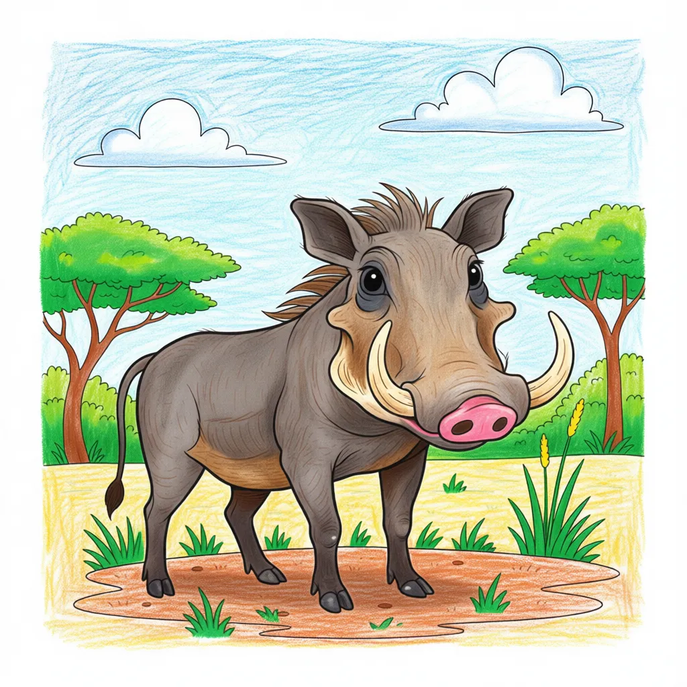

African Warthog
Phacochoerus africanus

Key Characteristics
- Warthogs are wild pigs with large, curved tusks and thick, warty skin on their face—which gives them their name!
- They live in burrows, often taking over holes dug by other animals like Aardvarks.
- Warthogs eat a lot of grass and roots, using their tough snouts to dig them out of the ground.
Peculiar Facts (Fun Facts!)
- When they run, Warthogs stick their thin tails straight up in the air, like little flags!
- They enter their burrows backward so they can use their tusks to defend the entrance if needed.
- Warthogs love to kneel on their front legs while eating, using their tough noses as support.